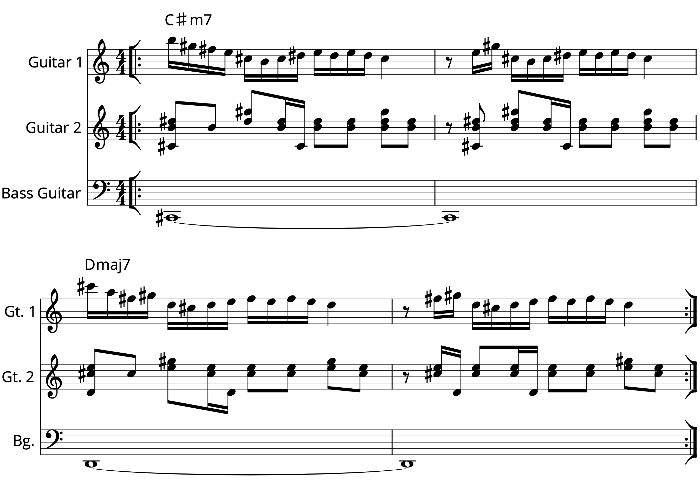

Transcription: “Story” — Brian Evans with Chon + A Rant About Music Theory

This has been kicking around in my drafts folder for almost exactly one year — I guess now is as good of a time as any to share it with the world. So, last October I saw a post over on r/Drums where somebody asked about the Chon track “Story” off of their 2015 debut. The poster was asking about what was going on at the end of the tune, around the 3:10 mark. Have a listen yourself.
I tend to be pretty tough on internet drummers, since most of them don’t really know what’s going on, especially when we start talking about theory. On the r/Drums post, some people chimed in and tried to help, but most of them were over thinking it, going on about time signature changes and the like. All good intentions at least.
Things got worse when I watched the music video OP shared, where I found this train wreck of a comment thread:


Oof. Where do I even start… first, you gotta love HazedHD coming in clutch to let everyone know what chode he is. I really wish you could dislike comments on YouTube, but you can’t do that because it’s a trash website. I would link to the comment thread so you can read all of it, but I can’t do that because YouTube is a trash website.
So, what is going on with the end of ”Story” that’s got everyone in a tizzy? Well, after giving it a few listens, I was pretty sure I had it figured it out: the drummer shifts from straight 16ths to a half–time shuffle, but with some off–beat triplets on the hi hat to give it a unique lope.
The main riff alternates between 4/4 and 7/8, but for the life of me, I don’t hear any time signature changes during the outro. I even transcribed the parts from the rest of the band, and I’m certain they play the same four measure vamp ’till the end:
When stuff like this comes up, transcribing is the best way to get to the bottom of it. The thing that’s really getting everyone’s attention is how the off–beat triplet stuff clashes with the straight 8ths and 16ths from the guitars.
Is it a polyrhythm? Well, I guess you could consider 16th note triplets over straight 16ths to be polyrhythmic, but that sort of misses the point of what polyrhythms are supposed to be — I can’t really say that there’s anything like a strong 3 over 2 drive to this section.
Polymeter? No, absolutely not; everything fits nicely into bars of 4/4. HazedHD seems to be under the impression that different rhythms split between instruments will create a polymeter. I'm sorry buster, but that's a big no.
Dotted 8ths? Hemiola? A pattern that resolves after two measures of 4/4? Ugh… people, save yourself some trouble and just do a little bit of math*. Look, I could go on all day here, but the long and short of it is that people are really overthinking this.
What’s wrong with just saying “shuffle”, or “off–beat triplets”, or perhaps “syncopation”? Are those terms not fancy enough? We don’t need to dig deep into the music theory glossary and whip out phrases with no rhyme or reason. For crying out loud, why not just say groove? Like “That groove at the end was insane”. See? Works just fine. Please and thank you. No need to dig up flowery words. Bloody hell, syncopation can be plenty complicated.
Oh by the way, don’t get it twisted, I think it’s a pretty bitchin’ ending; I really love the hi–hat barks he starts throwing in at the very end. Also, the fill that kicks off the ending groove swings hard. I think it’s played on just two toms — I’ve seen the drummer use both three and two toms from time to time on live shows, but I don’t know what was used in the studio. Whatever, it’s still great.
I don't know much about this drummer Brian Evans; I'm not sure what the dude even looks like (I seem to be running into that problem a lot lately). I thought the drummer on “Story” was full–time Chon drummer Nathan Camarena, the guy who plays it live. While Nathan drums on some of the songs on Grow, Brian shows up for a few tracks; of all people, Matt Gartska shows up to play as well (check out the album credits here).
I guess Brian is some sort of drum instructor that was working with Nathan when Chon did this LP. I assume he just hopped on Nathan’s kit in the studio, but who knows. It’s kind of a weird situation; unless I’m working with Steely Dan, I don’t know how I would feel about other drummers randomly jumping in on my drum kit. Whatever works for them.
I was prepared to marvel about Nathan laying this tune down when he was ~17 years old, but unfortunately that’s not the case on “Story”. I mean, it’s still pretty impressive to cut a prog album when you’re a teenager. Much more impressive than some kid on YouTube playing along to Zeppelin tunes… whoops, did I say that out loud?
Update 8/27/21: Believe it or not, Brian Evans actually reached out to me this past week regarding my post; someone sent it to him and he messaged me on Instagram to talk about it and provide some more insight. He explained that he doesn’t really kick Nathan off the set in the studio — rather, Brian is a founding member and is the go–to guy for tracking drums on the records (think: Hal Blaine drumming in the studio for The Carpenters).
So it was actually Nathan who would hop on the kit in the studio, working off of demos from Brian. Brian also confirmed that Matt Garstka did join in on the sessions for Grow. They both worked on the same tunes and let the rest of the band pick which takes they wanted. They figured a little competition would bring an edge to their performances.
Brain gave more info about his process: he seems to be well into the studio player kind of mindset, i.e. show up, hear the tune, and play it. He doesn’t enjoy playing on tour all that much, as he’d rather have the recording be the final word on the piece. Hence, two drummers for two different situations.
Brian told me that he tends to eschew planing out his parts well in advance of tracking. Instead, he throws in a healthy amount of improv to keep things fresh. I don’t think I could ever hack it that way, but it certainly works for him.
So there you have it. Pretty cool to get the inside scoop from a real professional!
*A lot of this stuff is intuitive to me: a dotted eight rhythm won’t resolve in 2 measures of 4/4. You have eight 8th notes in a bar of 4/4, but the LCM of 4 and 3 is 12, not 16. So that would make it three bars to resolve. But it doesn't really matter because that isn’t even happening on the damn song.
“Story” on Spotify and Apple Music.
Posted on October 4, 2020
Tags: 2020 • Transcription • Rants & Raves • Brian Evans • Chon